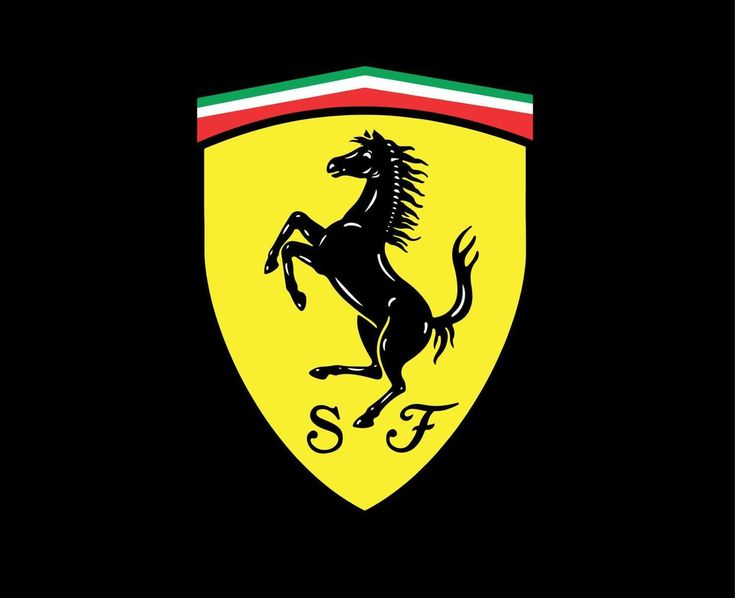
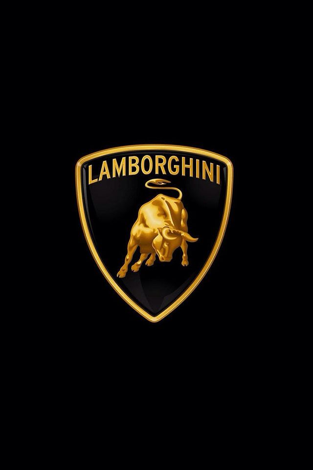

Bienvenue dans le monde du sport automobile
Une voiture de sport est conçue pour offrir des performances élevées — vitesse, maniabilité et accélération supérieures à une voiture classique
Les gens les aiment pour les sensations de conduite, le son du moteur, le design agressif et le prestige qu'elles représentent
Les marques les plus connues : Ferrari, Lamborghini, Porsche, Mercedes AMG, BMW M, Audi RS
Les voitures de sport ont des moteurs plus puissants, des suspensions plus rigides et des freins plus performants
Elles sont souvent équipées de technologies venues directement de la Formule 1